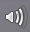

KDE Kontrollleiste
Dieser Artikel wurde für die folgenden Ubuntu-Versionen getestet:
Ubuntu 14.04 Trusty Tahr
Die Kontrollleiste der KDE wird von Plasma bereitgestellt. Dies bedeutet, dass die Kontrollleiste über so genannte Miniprogramme, die auch Plasmoide genannt werden, sehr leicht erweitert werden kann. In der Kontrollleiste können grundsätzlich die gleichen Miniprogramme wie auf der Arbeitsfläche abgelegt werden. Manche werden aber in der Kontrollleiste aus Platzgründen etwas anders dargestellt. Insbesondere ist es möglich, dass in der Kontrollleiste nur ein Symbol angezeigt wird und erst durch einen Klick darauf das eigentliche Miniprogramm erscheint. Sofern nichts anderes steht, bezieht sich dieser Wiki-Artikel auf den Zustand nach einer Standardinstallation; diese Vorbemerkung ist wichtig, da die Kontrollleiste wie alle KDE-Elemente äusserst vielfältig konfiguriert werden kann. Auch die standardmässig eingerichteten Elemente lassen sich, wenn gewünscht, natürlich aus der Kontrollleiste entfernen, sogar das K-Menü.
Standard-Elemente der Kontrollleiste¶
K-Menü¶
 Das erste Element von links in der Kontrollleiste ist das K-Menü, auch K-Knopf oder Kickoff-Anwendungsstarter genannt. Er erfüllt vielfältige Aufgaben, die optisch und funktional dem "Startmenü" gewisser Versionen von Windows ähneln. Durch einen Klick auf den K-Knopf wird das Menü geöffnet. Die drei Hauptfunktionen sind das Starten von Anwendungen, das Öffnen kürzlich benutzter Dateien sowie Optionen zum Herunterfahren des Rechners oder zur Abmeldung von der Sitzung. Standardmäßig wird die mit KDE 4 eingeführte Menü-Darstellung Kickoff zur Anzeige der Möglichkeiten verwendet. Es kann jedoch sehr leicht auf eine ältere, noch aus KDE 3 stammende Anzeige-Variante umgeschaltet werden. Dazu müssen die Miniprogramme entsperrt sein, was standardmäßig der Fall ist. Öffnet man nun das Kontextmenü des K-Knopfs per Rechtsklick, so wird ein Menüpunkt "Zum klassischen Menüstil wechseln" angezeigt. Über diesen kann man auf die erwähnte ältere Ansicht wechseln. Das Zurückwechseln auf die modernere Darstellung ist jederzeit in analoger Weise möglich.
Das erste Element von links in der Kontrollleiste ist das K-Menü, auch K-Knopf oder Kickoff-Anwendungsstarter genannt. Er erfüllt vielfältige Aufgaben, die optisch und funktional dem "Startmenü" gewisser Versionen von Windows ähneln. Durch einen Klick auf den K-Knopf wird das Menü geöffnet. Die drei Hauptfunktionen sind das Starten von Anwendungen, das Öffnen kürzlich benutzter Dateien sowie Optionen zum Herunterfahren des Rechners oder zur Abmeldung von der Sitzung. Standardmäßig wird die mit KDE 4 eingeführte Menü-Darstellung Kickoff zur Anzeige der Möglichkeiten verwendet. Es kann jedoch sehr leicht auf eine ältere, noch aus KDE 3 stammende Anzeige-Variante umgeschaltet werden. Dazu müssen die Miniprogramme entsperrt sein, was standardmäßig der Fall ist. Öffnet man nun das Kontextmenü des K-Knopfs per Rechtsklick, so wird ein Menüpunkt "Zum klassischen Menüstil wechseln" angezeigt. Über diesen kann man auf die erwähnte ältere Ansicht wechseln. Das Zurückwechseln auf die modernere Darstellung ist jederzeit in analoger Weise möglich.
Per Rechtsklick kann zudem die Option "Menüeinträge anpassen..." gewählt werden. Dann öffnet sich der Menüeditor, der umfangreiche Möglichkeiten zur individuellen Anpassung des K-Menüs bereitstellt. Im Prinzip lässt sich der Inhalt und Aufbau und damit das Erscheinungsbild nach Belieben gestalten; insbesondere können Anwendungen entfernt oder hinzugefügt werden, aber auch die Reihenfolge und die Gruppierung der Anwendungen ist vollständig frei konfigurierbar. Einsteigern empfiehlt es sich Änderungen jeweils einzeln zu testen, um ein ungewolltes "Verkonfigurieren" zu vermeiden.
Erwähnenswert ist, dass das K-Menü (allerdings nur in der Voreinstellung Kickoff) eine Suchfunktion hat, die zuoberst im ausgeklappten Menü zu finden ist. Das kann sehr praktisch sein, wenn man zwar den Namen eines Programms (oder auch nur einen Namensteil) kennt, aber nicht genau weiß, wo das Programm im K-Menü einsortiert ist: Man kann dann einfach den Namen oder Namensteil ins Suchfeld eingeben, und dann erscheinen alle Programme, die ihn enthalten, und können bequem per Mausklick gestartet werden.
Aktivitätenverwaltung¶
Das nächste Element ist die Aktivitätenverwaltung (etwas missverständlich auch nur Aktivitäten genannt). KDE bietet die Möglichkeit für verschiedene Aufgaben oder (aber nicht zwingend) verschiedene Benutzer gewissermaßen unterschiedliche Arbeitsumgebungen einzurichten, ohne dass verschiedene Sitzungen eröffnet werden müssen. Diese Möglichkeiten heißen Aktivitäten. Konkret können zum Beispiel denselben Programmen pro Aktivität andere Aktionen zugeordnet werden. Technisch gesehen bilden Aktivitäten eine Art Zwischenschicht zwischen einer Sitzung und einer Arbeitsumgebung. Der verlinkte Artikel informiert umfassend über diese interessanten Möglichkeiten von KDE. Das Element Aktivitätenverwaltung ermöglicht die Steuerung solcher Aktivitäten direkt aus der Kontrollleiste. Da dieses Feature nicht von allen Benutzern benötigt wird, kann es natürlich, wenn gewünscht, entfernt werden.
Fensterleiste¶
Die Fensterleiste ist das nächste Element der Kontrollleiste. In einer Standardinstallation ist das Element als solches zunächst gar nicht richtig erkennbar, zumindest solange keine grafische Anwendung (kein "Fenster") geöffnet ist. Die Fensterleiste füllt den ganzen Raum zwischen der Aktivitätenverwaltung links und dem Element "Arbeitsfläche anzeigen" rechts aus. Auf den meisten Systemen nimmt die Fensterleiste deshalb den größten Teil der Breite der Kontrollleiste ein.
Die Aufgabe der Fensterleiste ist es, alle geöffneten grafischen Anwendungen ("Fenster") anzuzeigen, damit diese per Mausklick bequem nach Belieben in den Vordergrund geholt werden können. Am Rande sei erwähnt, dass es in KDE durchaus auch andere Möglichkeiten gibt, eine gewünschte grafische Anwendung in den Vordergrund zu holen. Standardmäßig werden die Anwendungen in der Fensterleiste wie folgt dargestellt, gruppiert und sortiert: Solange noch Platz da ist, bekommt jedes Fenster einen eigenen "Eintrag", und zwar selbst dann, wenn es sich um eine Mehrfachinstanz desselben Programms handelt. Wird also etwa der Browser Firefox mehrmals gestartet, erscheinen alle Fenster nebeneinander, solange sie dafür genug Platz haben. Erst wenn der Platz ausgeht, werden mehrere Instanzen desselben Programms gruppiert, d. h. es gibt dann nur noch einen Eintrag pro Programm, der alle Instanzen gewissermaßen "gestapelt" enthält. Ein kleines Dreieck unter dem Symbol der Anwendung zeigt übrigens an, dass eine Gruppierung vorliegt, d. h. der Eintrag für mehr als ein Fenster steht.
Sind die Arbeitsflächeneffekte aktiviert, was standardmäßig der Fall ist, so wird ein Vorschaubild des Fensters angezeigt, wenn mit der Maus über den Eintrag in der Fensterleiste gefahren wird. Im Falle von Gruppierungen (z. B. eben von Mehrfachinstanzen desselben Programms) erscheinen dann alle Fenster nebeneinander als Vorschaubilder, und die gewünschte Anwendung oder Instanz kann direkt per Mausklick hervorgeholt werden. Eine andere Möglichkeit, bei gruppierten Einträgen den gewünschten hervorzuholen, ist durch Rechtsklick auf den fraglichen Eintrag möglich: Dann erscheinen alle Einträge der Gruppe tabellarisch aufgeführt, und der gewünschte kann ebenfalls angeklickt werden. Die Sortierung der Einträge erfolgt standardmäßig alphabetisch nach den Namen der geöffneten Programme von links nach rechts.
Öffnet man das Kontextmenü der Fensterleiste durch Rechtsklick auf einen freien Bereich, so kann man viele Einstellungen über den Menüpunkt "Fensterleiste einrichten" vornehmen, die das beschriebene Standardverhalten fast nach Belieben ändern. Man kann einstellen, dass nur die Fenster der aktuellen Arbeitsfläche oder nur die Fenster des aktuellen Bildschirms angezeigt werden. Die Sortierung kann ebenfalls verändert werden, insbesondere ist eine manuelle Sortierung statt der alphabetischen möglich. Dazu muss man Alt gedrückt halten und die Einträge in der Fensterleiste mittels Drag-and-Drop verschieben. Weitere einstellbare Sortierungsmöglichkeiten sind nach Aktivitäten oder nach Arbeitsfläche; das ist nur sinnvoll, wenn mehrere Aktivitäten oder mehrere Arbeitsflächen betrieben werden. Die Sortierung kann auch ausgeschaltet werden, dann erfolgen die Einträge in der Reihenfolge der Programmstarts. Schließlich kann eingestellt werden, dass Mehrfachinstanzen immer gruppiert werden, nicht erst, wenn kein Platz mehr auf der Fensterleiste ist. Umgekehrt kann aber die Gruppierung auch ganz ausgeschaltet werden, dann verkleinert KDE einfach die Einträge, wenn der Platz knapp wird auf der Fensterleiste.
Zusätzlich kann man sich nur minimierte Fenster oder sogar mehrere Zeilen in der Fensterleiste anzeigen lassen; mehrere Zeilen können eine Alternative sein zu Gruppierungen, wenn man trotz vielen offenen Anwendungen Überblick haben will. Über die Option "Zeileneinstellung erzwingen" kann man schließlich festlegen, ob immer eine bestimmte Zeilenanzahl verwendet werden soll oder ob sich die Fensterleiste dynamisch anpassen soll.
Arbeitsfläche anzeigen¶
Das erste Miniprogramm rechts der Fensterleiste ist das Element Arbeitsfläche anzeigen. Seine Funktion ist so simpel wie praktisch: Durch Mausklick treten alle geöffneten grafischen Programme (Fenster) in den Hintergrund, und angezeigt wird stattdessen die Arbeitsfläche. Die Anwendungsfenster werden minimiert und sind nur noch in der Fensterleiste sichtbar. Der Klick auf das Element hat denselben Effekt wie das Minimieren aller Fenster, ist aber natürlich bei vielen geöffneten Fenstern viel schneller. Ein erneuter Klick stellt wieder den vorherigen Zustand her.
Systemabschnitt der Kontrollleiste¶
Der Systemabschnitt der Kontrollleiste ist der nächste standardmäßig eingerichtete Bereich rechts des Elements "Arbeitsfläche anzeigen". Er enthält mehrere Elemente. Die Zahl und Art der Elemente unterscheidet sich von Installation zu Installation etwas, weil manche Elemente Bezug nehmen auf die Art des Systems, insbesondere auf die vorhandene und erkannte Hardware. Es gibt aber auch Elemente im Systemabschnitt, die standardmäßig immer vorhanden sind. Auch wichtige Informationen wie die Verfügbarkeit von Updates werden im Systemabschnitt angezeigt.
Es besteht die Möglichkeit einzelne Elemente des Systemabschnittes auszublenden oder aber zusätzliche einzublenden. Dazu öffnet man per Rechtsklick das Kontextmenü des Systemabschnittes (dabei muss man sehr genau vorgehen und auf eine freie Stelle zwischen Elementen klicken, da jedes Symbol auch ein eigenes Kontextmenü besitzt) und wählt den Menüpunkt "Einstellungen für Systemabschnitt der Kontrollleiste". Unter "Anzeige" werden alle zur Verfügung stehenden Elemente angezeigt, die über die entsprechende Auswahl deaktiviert oder aktiviert werden können. Zusätzlich kann unter "Einträge" die Sichtbarkeit der Elemente angepasst werden; zur Verfügung stehen hier die Optionen "automatisch" (das ist die Voreinstellung und bedeutet, dass das Element sozusagen dann erscheint, wenn das System es für angebracht erhält bzw. ein Ereignis eintritt, das das Element erscheinen lässt), "ausgeblendet" oder "immer sichtbar". Sobald es ausgeblendete Elemente gibt, wird ein zusätzliches Pfeilsymbol am linken Rand des Systemabschnittes angezeigt wie auf der Abbildung rechts oben zu diesem Abschnitt. Klickt man auf diesen Pfeil, so wird der Systemabschnitt expandiert und auch die ausgeblendeten Elemente werden angezeigt. Durch einen erneuten Klick auf den Pfeil werden diese Elemente wieder ausgeblendet.
Die nachfolgende Übersicht beschreibt jene Elemente des Systemabschnitts, die entweder standardmäßig immer vorhanden sind oder jedenfalls auf vielen Systemen mit üblicher Hardware standardmäßig erscheinen.
Klipper (Zwischenablage)¶
Das erste Element des Systemabschnitts ist standardmäßig Klipper, ein zu jeder Kubuntu- bzw. KDE-Standardinstallation gehöriges kleines Dienstprogramm, das die Funktion einer Zwischenablage übernimmt. Das bedeutet, dass im Laufe einer Sitzung gespeicherte Texte von Klipper gespeichert und verwaltet werden. Eine Kurzbeschreibung der Funktionen von Klipper befindet sich hier. Bei Rechtsklick auf das Element erscheinen alle bereits gespeicherten Zwischenablagen. Das Menü enthält diverse Optionen, beispielsweise können alle oder ausgewählte Einträge gelöscht werden. Natürlich können die Einträge auch bearbeitet werden. Es gibt auch etliche Optionen zum Anpassen von Klipper (Menüpunkt "Klipper einrichten"). Beispielsweise kann eingestellt werden, dass Klipper nicht nur Text, sondern auch Bilder abspeichert. Auch die Standardeinstellung, wonach Klipper beim Abmelden von der Sitzung die ganze Zwischenablage gespeichert lässt, kann geändert werden. Unter "Aktionen" können erweiterte Konfigurationen eingegeben werden, die bestimmten Inhalten der Zwischenablage bestimmte Aktionen zuordnen. Dazu müssen reguläre Ausdrücke verwendet werden, was hier nicht erklärt werden soll.
Phonon (Audio-Schnittstelle)¶
 Das nächste Element des Systemabschnitts ist standardmäßig die Audio-Schnittstelle Phonon. Es handelt sich dabei nicht im engeren Sinne um ein Programm von KDE, sondern eher um eine Funktionalität zur Verwaltung der Audio-Konfiguration in KDE und damit Kubuntu. Weiterführende Informationen können dem verlinkten Artikel entnommen werden. Phonon ist Teil jeder aktuellen KDE-Installation. Wird das Element mit der Maus überfahren, zeigt es an, wie "laut" Audio softwareseitig eingestellt ist (der Default-Wert ist 45 Prozent). Mit Rechtsklick kann das Konfigurationsmenü von Phonon geöffnet werden. Es ist möglich, mit der Option "Stummgeschaltet" die Audio-Funktion ganz abzuschalten. Mit der Option "Hauptkanal auswählen..." wird der Standard-Mixer von KDE, KMix, geöffnet. Unter anderem kann der aktuelle Lautstärkeregler gewählt werden (Standard sind die Wiedergabegeräte), und es kann der Kanal für die Hauptlautstärkeregelung gewählt werden (falls überhaupt mehrere Kanäle zur Auswahl stehen, was keineswegs der Regelfall ist). Die Option "Audio-Einrichtung" führt ins detaillierte Konfigurationsmenü von Phonon, das hier nicht im Einzelnen erklärt wird. Mit Linksklick stehen weitere Optionen zur Verfügung, die vor allem die Lautstärkekonfiguration einzelner Arten von Audiosignalen umfassen.
Geräteüberwachung¶
Das Element Geräteüberwachung informiert über angeschlossene Geräte. Sowohl der Name des Elements wie auch das Symbol für die Schnittstelle USB sind allerdings etwas irreführend. Zunächst werden keineswegs einfach alle angeschlossenen Geräte erfasst, sondern, in der Standardkonfiguration, jene über USB angeschlossene Geräte, die gemountet werden können, d. h. ein Speichermedium sind, das ein mountbares Dateisystem enthalten (so genannte Wechselmedien). Das sind zum Beispiel USB-Sticks, externe, per USB angeschlossene Festplatten oder Kartenleser, die Speicherkarten enthalten. Andere über USB angeschlossene Geräte (etwa Drucker, Mäuse, Tastaturen usw.) werden dagegen in keinem Fall von der Geräteüberwachung erfasst. Im Gegenzug werden durch die Geräteüberwachung bei entsprechender (nicht standardmäßiger) Konfiguration auch oder nur alle anderen Speichermedien erfasst, auch wenn sie nicht über USB angeschlossen sind, also zum Beispiel (auch interne) Festplatten, DVD-Laufwerke und andere. Die Einstellungen für die Geräteüberwachung können per Rechtsklick aufgerufen werden. Neben der Option, welche Geräte überhaupt angezeigt werden sollen, kann auch festgelegt, welche Gerätetypen in der Geräteüberwachung mit welchen Aktionen gekoppelt werden sollen.
Besondere praktische Bedeutung hat die Geräteüberwachung beim Anschluss von Wechselmedien. Es ist möglich direkt von der Geräteüberwachung aus mit dem Standard-Dateimanager (in einer Standardinstallation ist das unter KDE Dolphin) auf die Dateien des Mediums zuzugreifen. Ebenfalls können Wechselmedien in der Geräteüberwachung bequem vom System abgemeldet werden. Das ist unter Linux besonders wichtig, da die physische Trennung von nicht abgemeldeten Wechselmedien zu Datenverlusten und ruinierten Dateisystemen führen kann und oft auch führt! Sowohl das Mounten als auch das Abmelden von durch die Geräteüberwachung erkannte Geräte ist direkt grafisch durch Mausklick möglich, wenn das Element per Linksklick angewählt wird; das entsprechende Symbol steht rechts neben dem fraglichen Gerät im erscheinenden Menü. Wenn Geräte explizit nicht überwacht werden sollen, so kann man das Gerät in der Datei /etc/kubuntu-default-settings/hidden-media eintragen.
Netzwerkverwaltung¶
Das Element Netzwerkverwaltung dient zur Steuerung der Internetverbindung des Systems. Sowohl das verwendete Symbol wie auch die verfügbaren Optionen hängen von der Art der vorhandenen Verbindung ab; das Beispielsymbol steht für eine WLAN-Verbindung. Für eine detaillierte Darstellung aller Möglichkeiten der Netzwerkverwaltung wird auf den entsprechenden Artikel verwiesen, der sich auf alle Ubuntu-Derivate (nicht nur auf Plasma bzw. Kubuntu) bezieht. Beim Überfahren des Symbols mit der Maus wird die ggf. aktive Verbindung angezeigt. Mit Linksklick werden alle vorhandenen ("erreichbaren") Verbindungen bzw. Netze angezeigt. Es ist möglich per Mausklick die aktive Verbindung zu kappen oder natürlich andere mögliche Verbindungen herzustellen. Im Menü "Verbindungs-Editor" stehen zahlreiche Optionen zur Konfiguration von Verbindungen zur Verfügung. Mit Rechtsklick kann die Netzwerkverwaltung in dem Sinne konfiguriert werden, dass eingestellt werden kann, welche Einzelheiten (direkt) angezeigt werden sollen; die Voreinstellungen sind aber schon recht umfangreich, so dass Einsteiger in der Regel hinreichende Angaben erhalten. Zusätzlich kann festgelegt werden, welche besonderen Ereignisse in der Kontrollleiste direkt angezeigt werden sollen (per Voreinstellung ist dies z. B. die Nichterreichbarkeit der für die Verbindung benötigten Hardware). Allfällige Meldungen erfolgen durch das Element Benachrichtigungen.
Ausgeblendete Symbole anzeigen¶
Das Element "Ausgeblendete Symbole anzeigen" ermöglicht per Linksklick Zugriff auf einige Elemente bzw. deren Symbole, die nur beim Eintreffen bestimmter Ereignisse erscheinen. Dies ist zum Beispiel die Druckauftragsverwaltung: Dieses Element erscheint erst, wenn tatsächlich ein Druckauftrag ausgelöst wird (und natürlich überhaupt ein Drucker installiert ist!). Alles zum Thema Drucken unter Ubuntu (nicht spezifisch KDE) ist im Artikel CUPS erklärt. Ein anderes Symbol, dass nur situativ erscheint, ist die Instant Messenger-Anwesenheit: Erst wenn ein Instant Messenger konfiguriert wurde, was nicht automatisch bei der Installation geschieht, erscheint dieses Symbol. Das Element Akkuüberwachung gibt Zugriff auf die Energieverwaltung. Auf Desktop-Systemen erscheint dieses Element im Normalfall gar nicht, bei akkubetriebenen Geräten (z. B. Notebooks) dagegen dauernd zwecks Angabe des Akku-Standes. Ein weiteres recht wichtiges Element, das nur situativ erscheint, sind die Benachrichtigungen: Erst wenn das System eine Benachrichtigung abschickt, erscheint auch das Element im Systemabschnitt der Kontrollleiste. Ein eigenes Element schliesslich ist die Aktualisierungs-Benachrichtigung. Diese erscheint situativ, sobald Aktualisierungen fürs System zum Download und zur Installation bereit stehen. Dieses (Standard-)Verhalten des Systems bezüglich Aktualisierungen kann natürlich geändert werden, worauf hier nicht weiter eingegangen wird.
Akkuüberwachung¶
Das Miniprogramm Akkuüberwachung wird standardmäßig nur bei akkubetriebenen Geräten, z.B. bei Notebooks, angezeigt. Es zeigt primär den Füllstand des Akkus an. Bei solchen Systemen lässt sich hier zum Beispiel die Bildschirm-Helligkeit regeln. Bei netzbetriebenen Systemen ist das Element nur unter den ausgeblendeten Symbolen zu finden. Das Element hat aber noch weiter gehende Funktionen, die auch für Desktop-Systeme interessant sind: Gewisse (einfache) Optionen der Energieverwaltung sind nämlich direkt per Rechtsklick ("Einstellungen") zugänglich. So kann festgelegt werden, ob und nach welcher Zeit der Bildschirm in den Energiesparmodus gehen soll, wenn eine Zeitlang keine Eingaben erfolgen (per Default soll er das nach 10 Minuten). Auch ob in dem Fall die Sitzung in den Ruhezustand gesetzt werden soll, und wenn ja, wann, ist einstellbar (dies ist normalerweise deaktiviert).
Schließlich stehen Optionen für das Shutdown des Systems zur Verfügung. In der Standardeinstellung soll beim Betätigen des (softwareseitigen!) Ausschaltknopfs der Abmeldedialog erscheinen, aber es lassen sich auch andere Verhaltensweisen einstellen (z. B. direktes Herunterfahren ohne Rückfrage). In den "Erweiterten Einstellungen" kann weiter festgelegt werden, ob der Bildschirm im Ruhezustand gesperrt sein soll (ist voreingestellt und zu empfehlen), und ob bei Notebooks auch bei geschlossenem Deckel Aktionen möglich sein sollen. Es sei erwähnt, dass für komplexere Manipulationen der Energieverwaltung natürlich der verlinkte Artikel zur Energieverwaltung konsultiert werden muss, da es sich um ein weitläufiges Thema handelt; übers Miniprogramm Akkuüberwachung sind nur (aber immerhin) Grundeinstellungen konfigurierbar. Zum Schluss sei noch der Hinweis gemacht, dass unter Umständen mit diesem Plasmoid auch bei Desktop-Systemen Füllstände von Akkus angezeigt werden, nämlich dann, wenn Batterien am System angeschlossen sind, etwa per USB zum Betrieb kabelloser Mäuse oder Tastaturen.
Druckauftragsverwaltung¶
Das Plasmoid Druckauftragsverwaltung erscheint standardmäßig nur, wenn und solange ein Druckauftrag ausgeführt wird; ansonsten ist es unter den ausgeblendeten Symbolen zu finden. Das Element ist Teil jeder Grundinstallation, selbst wenn (noch) kein Drucker installiert wurde, da das zu Grunde liegende Drucksystem CUPS bei jeder (K)Ubuntu-Standardinstallation mitinstalliert wird. Per Rechtsklick ("Einstellungen") kann das Verhalten des Elements beeinflusst werden. So kann bestimmt werden, dass das Element statt bei aktiven Druckaufträgen nur bei abgeschlossenen Aufträgen erscheint, oder auch bei aktiven und bei abgeschlossenen. Im Menüpunkt "Einstellungen - Drucker" kann tiefer in CUPS eingegriffen werden. Das ist zum Beispiel auf Systemen interessant, auf denen mehrere Drucker erreichbar sind. Es kann zum Beispiel ein Standarddrucker festgelegt bzw. diese Festlegung geändert werden. Auch ein Einblick in die Druckwarteschlange oder das Drucken einer Testseite sind möglich. Mit der Schaltfläche "Einrichten" können etliche druckerspezifische Optionen eingestellt werden wie zum Beispiel das Papierformat und etliche mehr. An sich erlaubt das Plasmoid auch das Einrichten eines neuen Druckers ("Drucker hinzufügen"); allerdings ist es in der Regel deutlich Erfolg versprechender dazu gemäß dem Übersichtsartikel Drucker vorzugehen.
Instant-Messenger-Anwesenheit¶
Das Plasmoid Instant-Messenger-Anwesenheit erscheint standardmäßig erst, wenn ein Instant Messenger-Programm konfiguriert wurde; wenn das (noch) nicht gemacht wurde, ist es ausgeblendet. Unter KDE 4 ist KDE-Telepathy das Default-IM-Programm, doch gibt es natürlich zahlreiche andere IM-Programme für (K-)Ubuntu. Es ist möglich, KDE-Telepathy direkt per Linksklick übers Plasmoid zu konfigurieren. Natürlich müssen dazu die Zugänge zu den Diensten, die per KDE-Telepathy benutzt werden sollen, bereits eingerichtet sein und die Zugangsdaten bereit liegen. Zudem muss der gewünschte Dienst überhaupt von KDE-Telepathy aus angesprochen werden können. Dasselbe gilt natürlich für alternative IM-Programme. Einige Menüpunkte sind auch per Rechtsklick direkter erreichbar. Insgesamt kann über das Miniprogramm eine umfassende Verwaltung von IM vorgenommen werden. Die Konfigurationsmöglichkeiten des Plasmoids als solchen beschränken sich auf die bei nahezu allen Miniprogrammen bestehende Möglichkeit der Konfiguration einer Tastenzuordnung.
Benachrichtigungen¶
Das Plasmoid Benachrichtigungen informiert über Systemereignisse. Es erscheint nur, wenn tatsächlich mindestens eine Benachrichtigung ansteht; ansonsten ist das Symbol ausgeblendet. Bei vorhandenen Benachrichtigungen erscheint in der Mitte des Symbols statt des Buchstaben "i" eine Zahl (1, 2, ...), die die Anzahl der gerade eingetroffenen Benachrichtigungen bezeichnet. Wird das Symbol beim Vorhandensein von Benachrichtigungen angeklickt, können diese gelesen werden. Sind sie erledigt oder irrelevant, können sie direkt auf dem ausgeklappten Fenster weggeklickt werden ("x" rechts). Das Miniprogramm unterscheidet zwischen "Anwendungsbenachrichtigungen" und "Dateiübertragungen und andere Vorgänge". Per Rechtsklick kann das Plasmoid konfiguriert werden, indem eine der beiden Kategorien oder auch beide ausgeschaltet werden; im zweiten Fall meldet das System keine Benachrichtigungen mehr über dieses Plasmoid. Dies ist indes zumindest Einsteigern eher nicht zu empfehlen, da auch sicherheitsrelevante Meldungen erscheinen, insbesondere über neue Aktualisierungen des Systems ("Patches", "Sicherheitsupdates"). Kubuntu bzw. KDE 4 zeigt allerdings solche Updates standardmässig noch über ein eigenes Plasmoid an, die Muon Application Aktualisierungs-Benachrichtigung, die dann die Direktinstallation von Updates ermöglicht.
Muon Application Aktualisierungs-Benachrichtigung¶
Das Plasmoid mit dem etwas umständlichen Namen Muon Application Aktualisierungs-Benachrichtigung meldet alle (aber auch nur) Aktualisierungen der offiziellen Paketquellen. Stehen keine solchen Aktualisierungen bereit, ist das Element ausgeblendet. Wenn Aktualisierungen bereit stehen, erscheint das Element und hat dann wie das Symbol hier ein kleines rotes Schild rechts unten (das fehlt in der ausgeblendeten Version, wenn keine Aktualisierungen da sind). Das Plasmoid Benachrichtigungen meldet solche Aktualisierungen übrigens ebenfalls bzw. zusätzlich. Die Aktualisierungs-Benachrichtigung erlaubt per Linksklick das direkte Herunterladen und Installieren der Aktualisierungen über die Muon-Aktualisierungsverwaltung; dies ist die Standardaktualisierungsverwaltung unter KDE 4. Per Rechtsklick stehen zusätzliche Optionen offen: Die Benachrichtigung kann ohne weitere Aktion geschlossen werden (nicht zu empfehlen!), oder es kann statt nur die Aktualisierungsverwaltung gleich die ganze Muon-Paketverwaltung geöffnet werden; dies ist besonders dann sinnvoll, wenn vor dem Download oder der Installation Informationen über die zu aktualisierenden Pakete gewünscht werden.
Uhr¶
Das nächste Element, direkt rechts des Systemabschnitts der Kontrollleiste, ist standardmässig die Uhr. Die Uhr bietet eine recht hohe Funktionalität und etliche Konfigurationsmöglichkeiten. Per Linksklick öffnet sich ein Kalender, der bei einem zweiten Linksklick auf die Uhr wieder geschlossen wird. Per Rechtsklick stehen mehrere Funktionen bereit. Es ist zum Beispiel möglich, das aktuelle Datum und die aktuelle Uhrzeit in die Zwischenablage zu kopieren, und zwar in einer Vielzahl verschiedener Formatierungen und sogar verschiedener Kalendersysteme (diese Unteroption ist im untersten Menüpunkt "Andere Kalender" zugänglich). Selbstverständlich können Datum und Uhrzeit händisch eingestellt werden. Die Darstellung der Uhrzeit und ggf. des Datums (per Default wird nur die Uhrzeit angezeigt) wird über das Menü "Einstellungen für 'Digitale Uhr'" vorgenommen, das nahezu unbegrenzte Konfigurationsmöglichkeiten eröffnet, sowohl hinsichtlich der Anzeigeart der Informationen als auch hinsichtlich Optik. Zum Beispiel können zusätzlich Sekunden, Wochentage oder das Jahr angezeigt werden.
Es sei noch erwähnt, dass es für KDE 4 neben dem Standard-Miniprogramm zahlreiche andere "Uhren-Plasmoide" gibt. Wenn man eine andere Uhr haben will, so muss man diese wie unten beschrieben manuell installieren oder zumindest aktivieren und dann die vorgegebene digitale Uhr entfernen.
Werkzeugkasten der Kontrollleiste¶
Am rechten Bildschirmrand, noch rechts der Uhr, folgt standardmässig als letztes Element der Werkzeugkasten der Kontrollleiste in der Form des Plasma-Symbols. Das Element erscheint nur, wenn die Miniprogramme entsperrt sind, was per Default der Fall ist. Die gelbe Darstellung des Symbols wie auf der Abbildung links erscheint nur beim Mouseover; ansonsten ist das Symbol unscheinbar grau. Das Element erlaubt den direkten Zugriff auf erweiterte Konfigurationsmöglichkeiten der Kontrollleiste ("erweitert" soll hier heissen, dass es da nicht ums blosse Hinzufügen oder Entfernen von Plasmoiden geht). Die Benutzung des durch Linksklick aufklappenden Dialogfelds ist weiter unten erklärt.
Hinzufügen weiterer Elemente¶
Allgemeines¶
Die standardmässig vorhandenen und aktivierten Plasmoide der Kontrollleiste erfüllen in der Regel die Anforderungen für Einsteiger in Kubuntu. Selbstverständlich lassen sich aber eine grosse Anzahl weiterer Miniprogramme hinzufügen. Es gibt zwei Arten zusätzliche Plasmoide hinzuzufügen. Eine Standardinstallation enthält bereits zahlreiche Miniprogramme, die jedoch noch nicht aktiviert sind. Neben dem Aktivieren dieser Plasmoide können weitere Miniprogramme ganz normal aus Paketquellen nachinstalliert werden.
Eine Beschreibung aller aktivierbarer oder gar aller installierbarer Plasmoide ist weder sinnvoll noch notwendig. Wer ein bestimmtes Miniprogramm aktivieren oder installieren will, wird sich in der Regel im Voraus über die Möglichkeiten des fraglichen Plasmoids informieren. Zudem ist das Entfernen nicht (mehr) benötigter Miniprogramme denkbar einfach, so dass es gefahrlos möglich ist Plasmoide auszuprobieren. Um ein "Verkonfigurieren" der Kontrollleiste zu vermeiden, ist aber sehr zu empfehlen jedes neu aktivierte oder installierte Plasmoid zunächst zu testen.
Aktivieren vorhandener Elemente der Standardinstallation¶
Um Miniprogramme hinzuzufügen, die bereits Teil einer Standardinstallation sind, jedoch standardmässig nicht aktiviert sind, muss per Rechtsklick auf die Kontrollleiste der Menüpunkt "Einstellungen für Kontrollleiste" angewählt werden. Im danach erscheinenden Menü wird "Miniprogramme hinzufügen..." gewählt. Nun wird ein neuer Dialog geöffnet, welcher alle aktivierbaren Miniprogramme auf dem System zeigt. Das Heraussuchen des gewünschten Plasmoids ist insofern nicht ganz perfekt gestaltet, als die Liste der Miniprogramme leider nicht scrollbar ist, so dass nur die nach ihrem Namen alphabetisch sortierten ersten paar Plasmoide (die Anzahl variiert je nach Breite und Auflösung des Bildschirms) erscheinen. Zusätzlich besteht aber eine Suchfunktion, so dass das gewünschte Plasmoid zumindest dann gefunden wird, wenn man einen Namensteil kennt. Zudem besteht noch eine Sortierung nach Kategorien (leider auch nicht scrollbar). Das gewünschte Miniprogramm kann nun per Drag-and-Drop in die Kontrollleiste gezogen werden, was jedoch an bestimmten Stellen, wie neben der Fensterleiste oder dem Systemabschnitt, nicht möglich ist. Ob es möglich ist, ein Miniprogramm an der gewünschten Stelle abzulegen, wird durch den Mauszeiger angezeigt.
Installieren neuer Elemente¶
Aus Paketquellen können eine grosse Anzahl weiterer Elemente, die nicht Teil einer Standardinstallation sind, nachträglich installiert werden. Das kann nach allen Arten erfolgen, wie unter Kubuntu Anwendungen installiert werden können, und wird hier nicht weiter erklärt. Es sei aber noch auf folgende zusätzliche Möglichkeit hingewiesen, direkt aus der Kontrollleiste bestimmte neue Plasmoide zu installieren: Der oben beschriebene Dialog mit den aktivierbaren Miniprogrammen enthält zusätzlich rechts eine Schaltfläche "Neue Miniprogramme holen". Wird sie angeklickt, kann über den Menüpunkt "Neue Miniprogramme herunterladen" ein Dialogfenster geöffnet werden, das direkt eine grosse Auswahl nachinstallierbarer Plasmoide anzeigt, die nach verschiedenen Kriterien sortiert werden können. Dies kann ein guter Ansatzpunkt für neue interessante Plasmoide sein. Zu beachten ist allerdings, dass nicht alle Erweiterungen in erster Linie für die Kontrollleiste gedacht sind - dies trifft sogar nur für die Minderheit zu -, sondern dass viele Plasmoide primär für die Arbeitsfläche gedacht sind. Zwar können wie einleitend bemerkt an sich alle Plasmoide auch für die Kontrollleiste benutzt bzw. in diese integriert werden, doch können mitunter etwas gewöhnungsbedürftige optische Effekte resultieren. Deshalb eignet sich dieser Zugang eher zum Stöbern und Ausprobieren. Wer gezielt ein bestimmtes Plasmoid sucht, wird eher direkt die fraglichen Pakete nach dem üblichen Vorgehen für die Installation von Anwendungen installieren.
Entfernen von Elementen¶
Es ist möglich, alle Elemente einer Kontrollleiste zu entfernen, auch jene, die standardmässig aktiviert sind. Dazu öffnet man den Werkzeugkasten der Kontrollleiste (siehe oben) und navigiert dann mit der Maus nach dem Erscheinen des Konfigurationsdialogs zum zu entfernenden Plasmoid. Wenn in der Leiste viele Plasmoide vorhanden sind, muss unter Umständen recht genau "gezielt" werden. Hilfreich ist dabei, dass dabei eine Art "Zielfernrohr" als Symbol erscheint, mit der das gewünschte Plasmoid angesteuert werden kann. Bei den standardmässig aktivierten Plasmoiden erscheint dann bei Rechtsklick ein Menü, das zuunterst die Option "Entfernen" (mit einem roten Kreuz) enthält, mit der das Miniprogramm bequem entfernt werden kann. Bei später hinzugefügten oder aktivierten Plasmoiden kann es vorkommen, dass der Menüpunkt geringfügig anders heisst (z. B. englisch "Quit", auch bei einem ansonsten deutschsprachigen Plasmoid). Wenn ein Plasmoid aus Paketquellen installiert wurde, entfernt die beschriebene Vorgehensweise die Pakete des Plasmoids selbstverständlich nicht vom System. Dies muss (falls gewünscht) separat in der Paketverwaltung erledigt werden. Technisch ist das hier beschriebene Entfernen von Plasmoiden eigentlich ein Deaktivieren.
Erweiterte Konfiguration¶
Allgemeines¶
Neben dem Hinzufügen oder Entfernen von Plasmoiden bestehen zahlreiche weitere Optionen, um die Kontrollleiste optisch und funktional zu konfigurieren. Um das zu tun, müssen die Miniprogramme entsperrt sein. Per Default ist das der Fall, aber es lohnt sich das zuerst zu überprüfen. Der Menüpunkt kann zum Beispiel per Rechtsklick auf die Kontrollleiste angewählt werden und befindet sich in der Menügruppe "Einstellungen der Kontrollleiste" - "Miniprogramme entsperren". Wird statt der Kontrollleiste ein Plasmoid darauf per Rechtsklick angeklickt, erscheint der Menüpunkt direkt. Nun wird in der Kontrollleiste ganz rechts am Rand, noch recht der Uhr, das Plasma-Symbol angezeigt. Durch Linksklick auf dieses wird der Konfigurationsdialog geöffnet (siehe nachfolgendes Bild).
Es ist auch möglich, den Dialog per Rechtsklick auf die Kontrollleiste und dann oder durch den Menüpunkt "Einstellungen für Kontrollleiste" - "Kontrollleisten-Einstellungen" zu öffnen. Alle nachfolgenden Erklärungen zur Konfiguration gehen davon aus, dass dieser Dialog geöffnet ist. Der Dialog lässt sich jederzeit durch Anklicken des roten Kreuzchens rechts schliessen.
Verschieben von Elementen¶
Wenn der Konfigurationsdialog geöffnet ist, können Miniprogramme, aber auch andere Elemente der Kontrollleiste (etwa das K-Menü oder der ganze Systemabschnitt) in ihrer Anordnung verändert werden. Das Prinzip ist intuitiv: Fährt man mit der Maus über das fragliche Element, so wird ein Symbol für das Verschieben mit dem Mauszeiger angezeigt. Nun kann man das Element mittels Drag-and-Drop an die neue gewünschte Position ziehen.
Bei etwas umfangreicheren Anpassungen muss Folgendes bezüglich der Hierarchie der zu verschiebenden Elemente beachtet werden: Elemente im Systemabschnitt kann man nicht einfach per Drag-and-Drop irgend woandershin verschieben. Verschiebbar ist in einem Rutsch nur der ganze Systemabschnitt; wenn einzelne Elemente aus dem Systemabschnitt an eine andere Stelle auf der Kontrollleiste verschoben werden sollen, müssen sie zuerst aus dem Systemabschnitt gelöscht und danach neu als Plasmoid auf der Fensterleiste aktiviert werden. In der Praxis ist das alles weniger kompliziert, als es sich liest, weil nämlich bei geplanten Verschiebungen jeweils eine dunkelgraue Fläche an der Stelle des ursprünglichen Platzes des Elements erscheint, so dass sofort ersichtlich ist, was direkt verschiebbar ist.
Kontrollleiste als Ganzes verschieben¶
Die Kontrollleiste kann als Ganzes an jeden Rand des Bildschirms (unten, oben, rechts, links) verschoben werden; per Default ist sie unten. Eine Verschiebung erfolgt durch Klicken auf die Schaltfläche Bildschirmkante im Konfigurationsdialog. Danach erscheint ein Mauszeiger, und die ganze Leiste kann per Drag-and-Drop verschoben werden. Das Verschieben an den rechten oder linken Bildschirm-Rand ist etwas gewöhnungsbedürftig, da dazu die Leiste ja nicht nur verschoben werden muss, sondern auch noch ihre Ausrichtung ändert. Mit den Verschiebeoptionen ergeben sich sehr individuelle Konfigurationsmöglichkeiten des Desktops bzw. der Leiste unter KDE 4.
Vertikale Größe ändern¶
Alle Miniprogramme der Kontrollleiste werden beim Vergrößern proportional skaliert, d. h. die Miniprogramme wachsen auch in der Breite. Dies bedeutet natürlich, dass der Bereich für die Fensterleiste kleiner wird, wenn mehr Plasmoide hinzugefügt werden. Das diesbezügliche Verhalten bzw. das resultierende Aussehen können aber beeinflusst werden. Im Konfigurationsdialog gibt es die Schaltfläche Höhe. Klickt man mit der Maus auf diese und hält man dabei die Maustaste gedrückt, kann man die vertikale Größe der Kontrollleiste direkt per Drag-and-Drop ändern. Es sei noch erwähnt, dass die Symbole in der Kontrollleiste auch übereinander statt nur nebeneinander angezeigt werden können, wenn eigentlich zu wenig Platz dafür da ist; das sieht freilich etwas gewöhnungsbedürftig aus.
Horizontale Größe ändern¶
Es ist sogar möglich, die horizontale Ausdehnung der Kontrollleiste zu verändern. Per Default füllt die Leiste die ganze zur Verfügung stehende Breite des Bildschirms aus, was sicher dem Geschmack und der Gewohnheit der Mehrheit der Nutzer entspricht. Wird dies geändert, bedeutet das, dass rechts oder links oder sogar auf beiden Seiten der Kontrollleiste ein "leerer" Bereich entsteht bzw. sichtbar wird. Für das Ändern muss im Konfigurationsdialog die Schaltfläche "Weitere Einstellungen" angeklickt werden. Im erscheinenden Menü muss der Menüpunkt "Mittig" aus dem obersten Bereich "Ausrichtung der Kontrollleiste" gewählt bzw. aktiviert werden (per Default ist "links" aktiviert). Jetzt erscheinen im Konfigurationsdialog (untere Hälfte) diverse Regler in Form von Pfeilsymbolen. Mit diesen können die horizontale Grösse und dann auch die Position der Kontrollleiste in der Waagrechten per Drop-and-Drag nach Wunsch geändert werden. Das Vorgehen ist nicht ganz intuitiv und erfordert etwas Ausprobieren; am besten kommt man am Anfang zum Ziel, wenn zuerst mit dem Regler in der Mitte die Grösse eingestellt (bei erstmaliger Manipulation: verkleinert) wird und dann mit den Reglern auf der Seite die Position bestimmt wird.
Sichtbarkeit der Kontrollleiste beeinflussen¶
Es ist möglich, dass Sichtbarkeitsverhalten der Kontrollleiste zu manipulieren, wie dies auch bei anderen Betriebssystemen (etwa Windows 7) machbar ist. Per Default ist die Kontrollleiste immer sichtbar, womit gemeint ist, dass sie auch dann zu sehen ist, wenn Fenster von Anwendungen offen sind, d. h. die Kontrollleiste überdeckt dann einfach einen kleinen Teil des Fensters der Anwendung (in der Regel, d. h. per Default, unten; natürlich aber an einem anderen Rand des Bildschirms, wenn sie dorthin verschoben wurde). Dazu muss wiederum die Schaltfläche Weitere Einstellungen angeklickt werden. Das dann erscheinende Menü enthält den Menüpunkt Sichtbarkeit, der vier Optionen bietet:
1) Immer sichtbar ist die Default-Einstellung und bewirkt das soeben beschriebene Verhalten.
2) Automatisch ausblenden bedeutet, dass die Kontrollleiste grundsätzlich nicht zu sehen ist, unabhängig davon, ob Anwendungsfenster geöffnet sind oder nicht. Um die Kontrollleiste mit dieser Einstellung trotzdem überhaupt sehen zu können, muss die Maus ans Bildschirmende gefahren werden, an dem die Kontrollleiste "klebt" (in der Regel wie gesagt unten). Dann erscheint die Kontrollleiste und kann ganz normal benutzt werden. Entfernt sich die Maus wieder vom Bildschirmrand, verschwindet bei dieser Einstellung auch die Leiste wieder. Falls Compositing aktiviert ist, leuchtet die Kontrollleiste vor dem Einblenden, also beim Nähern der Maus an den Bildschirmrand, kurz auf.
3) Fenster können die Kontrollleiste überdecken bedeutet, dass die Leiste unterscheidet, ob ein (oder mehrere) Anwendungsfenster geöffnet sind: Ist keines geöffnet, verhält sie sich wie bei Option 1), bei geöffneten Fenstern aber wie bei Option 2).
4) Fenster rutschen unter die Kontrollleiste ist etwas "sophisticated" und verhält sich fast wie 1), mit folgendem Unterschied: Befinden sich auf der Arbeitsfläche unmittelbar "neben" (standardmässig also: oberhalb) der Kontrollleiste Elemente bzw. Symbole, dann werden diese zusätzlich unter die Leiste geschoben. In der Regel ist dieses Verhalten unerwünscht, weshalb die Option 1) meist besser ist, wenn die Kontrollleiste grundsätzlich immer sichtbar sein soll.
Es sei noch folgende kleine praktische Schwierigkeit erwähnt beim Ändern des Sichtbarkeitsverhaltens der Kontrollleiste: Kubuntu bzw. KDE 4 hat manchmal Mühe, Änderungen zu übernehmen, solange Anwendungsfenster geöffnet sind. Das gilt vor allem dann, wenn nacheinander mehrere Optionen "durchgetestet" werden. Das Sichtbarkeitsverhalten kann sich dann unter Umständen "verhakeln". Zugleich ist es aber natürlich nötig, zum Ausprobieren der Optionen ggf. Anwendungsfenster zu öffnen. Es empfiehlt sich deshalb, nachdem die gewünschte Option bestimmt ist, alle Anwendungsfenster zu schliessen und dann erst die definitive Änderung vorzunehmen. Danach funktioniert die gewählte Option einwandfrei.
Zusätzliche Kontrollleisten hinzufügen¶
Es ist möglich, mehr als eine Kontrollleiste zu haben. Das Hinzufügen einer weiteren Kontrollleiste ist denkbar einfach: Man öffnet per Rechtsklick auf der Arbeitsfläche (nicht auf der Kontrollleiste!) das Kontextmenü und wählt den dritten Menüpunkt "Kontrollleiste hinzufügen". Es erscheinen dann drei Untermenüpunkte; in der Regel ist "Standard-Kontrollleiste" die beste Wahl. Wird der Menüpunkt gewählt, erstellt KDE eine neue bzw. zusätzliche Kontrollleiste, und zwar in der Standardvariante, wenn genau eine Kontrollleiste am unteren Bildschirmrand vorhanden ist, am oberen Bildschirmrand. Selbstverständlich kann diese neue Kontrollleiste später beliebig an einen anderen Bildschirmrand verschoben werden (siehe oben Kontrollleiste als Ganzes verschieben). KDE lässt jede denkbare Kombination zu. Durch das Hinzufügen neuer Kontrollleisten steigen natürlich die Konfigurationsmöglichkeiten im Kontrollleisten-Bereich nochmals gewaltig an. Es ist weder möglich noch sinnvoll, hier jedes mögliche Szenario zu beschreiben, weshalb nachfolgend nur ein paar Hinweise für experimentierfreudige Benutzer erfolgen.
Wenn mehr als eine Kontrollleiste verwendet wird und sowohl an einem horizontalen als auch an einem vertikalen Bildschirmrand eine Kontrollleiste ist (Beispiel: unten und rechts), dann entsteht das Problem, dass sich die beiden fraglichen Kontrollleisten in der Bildschirmecke überlappen, wobei die später hinzugefügte dort über der "alten" zu liegen kommt. Das ist in der Regel optisch und funktional eher störend. Dem kann mit der Konfigurationsmöglichkeit Horizontale Grösse ändern abgeholfen werden. Per Default entsteht dieses Problem bei ("nur") zwei Kontrollleisten nicht, da KDE diese unten und oben anordnet.
Es ist möglich, sogar mehr als zwei Kontrollleisten einzurichten. Per Default ordnet KDE die Kontrollleisten in der Reihenfolge unten - oben - rechts - links an. KDE erlaubt zu allem Überfluss gar das Hinzufügen von mehr als vier Kontrollleisten. Ab der fünften Kontrollleiste werden zusätzliche über eine bereits bestehende gelegt. Auf den ersten Blick scheint es, als ob die Verwendung von mehr als vier Kontrollleisten nicht mehr sinnhaft ist, aber mit der Option Horizontale Grösse ändern ist es möglich, am selben Bildschirmrand mehr als eine Kontrollleiste zu haben, die dann nebeneinander liegen. Bei heutzutage z. T. verwendeten sehr grossen Bildschirmen eröffnen sich hier interessante Möglichkeiten.
Wird beim Hinzufügen einer zusätzlichen Kontrollleiste der Menüpunkt "Standard-Kontrollleiste", wie es oben empfohlen wird, dann geht KDE so vor, dass die zusätzliche Leiste eine Kopie der schon bestehenden wird. In der Regel wird es sinnvoll sein, die neu angelegte Kontrollleiste danach abweichend von der bestehenden zu konfigurieren, weil sonst eher unerwünschte bis drollige Effekte entstehen, zum Beispiel folgender: Ist in der bestehenden Kontrollleiste konfiguriert, dass das Plasmoid Benachrichtigungen bestimmte Meldungen absetzt (was Default ist und empfohlen wird), dann erscheinen natürlich diese Meldungen doppelt (und buchstäblich aus verschiedenen Richtungen), wenn das Plasmoid bei beiden Kontrollleisten vorhanden und identisch konfiguriert ist.
Es ist möglich, statt den Untermenüpunkt Standard-Kontrollleiste einfach "Leere Kontrollleiste" zu verwenden. Dann enthält die neu hinzugefügte Leiste überhaupt keine Elemente (wirklich keine, nicht einmal das K-Menü). Das ist dann sinnvoll, wenn die neu hinzugefügte Kontrollleiste ganz anders aufgebaut sein soll als die bestehende.
Kontrollleisten entfernen¶
Kontrollleisten können einfach wieder entfernt werden. Im Konfigurationsdialog muss dazu wieder die Schaltfläche "Weitere Einstellungen" angeklickt werden. Der unterste Menüpunkt des erscheinenden Menüs lautet "Kontrollleiste entfernen" und tut genau das. Sicherheitshalber muss man in einem Dialog noch einmal bestätigen, dass man die Kontrollleiste wirklich entfernen möchte. Somit ist ein ungewolltes Entfernen eigentlich ausgeschlossen. Solche Rückfragen sind unter KDE die Ausnahme; sie erfolgt hier, weil das Entfernen einer Kontrollleiste nicht rückgängig gemacht werden kann. Es sei noch erwähnt, dass es durchaus möglich ist, alle Kontrollleisten zu entfernen, d. h. auch die "erste", die per Default am unteren Bildschirmrand ist. KDE kann durchaus ohne Kontrollleiste betrieben werden; natürlich dürfte dies nicht die mehrheitliche Usanz der Benutzer sein. Das (Wieder-)Hinzufügen einer (ggf. auch "ersten") Kontrollleiste erfolgt wie oben beschrieben ab der Arbeitsfläche, d. h. nur dazu muss noch keine Leiste vorhanden sein.
Kontrollleiste reparieren¶
Vorbemerkungen¶
Die sehr vielen verschiedenen Möglichkeiten der Konfiguration von Kontrollleisten bergen ein gewisses Risiko, die Leiste zu "verkonfigurieren" und dadurch unbrauchbar zu machen. Andere Gründe für defekte Kontrollleisten können zwar nicht ganz ausgeschlossen werden, sind aber in Kubuntu 14.04 selten. "Verkonfigurierte" Kontrollleisten sind ein relativ häufiges Thema bei Supportanfragen zu Kubuntu. Ist eine Kontrollleiste "verkonfiguriert", muss und kann sie repariert werden, und davon ist hier die Rede. Weil die Reparatur immer das Problem mit sich bringt, dass mehr oder weniger lieb gewonnene Einstellungen verloren gehen, folgen zuerst zwei Bemerkungen, um dieses Prozedere möglichst zu verhindern.
Die erste Vorbemerkung betrifft die Prävention des "Verkonfigurierens": Gerade wer seine Kontrollleisten aufwändig anpassen will, soll möglichst jede einzelne Veränderung zuerst testen. Wird dieses Prinzip konsequent eingehalten, sinkt die Wahrscheinlichkeit des "Verkonfigurierens" drastisch. Es beschränkt sich dann auf nicht vorhersehbare Fälle wie etwa "Amok laufende", seltenere Plasmoide. Wenn völlig unbekannte oder neu erschienene Plasmoide getestet werden sollen, kann folgende zusätzliche Absicherung angebracht sein: Die fragliche Kontrollleiste wird zuerst dupliziert nach dem Vorgehen fürs Hinzufügen zusätzlicher Kontrollleisten. Im Extremfall kann dann die defekte Leiste entfernt und durchs Verschieben des Duplikats ersetzt werden.
Die zweite Vorbemerkung betrifft die Einschätzung des Aufwands fürs Zurückkonfigurieren mit Hilfe der Angaben hier. Oft ist es möglich, halt mit etwas Ausprobieren, die "verkonfigurierte" Leiste doch noch wieder ein den gewünschten Zustand zurückzuversetzen. Wegen der Unzahl möglicher Fälle ist eine abstrakte Einschätzung dieses Aufwands aber natürlich völlig unmöglich. Hält man den Aufwand für zu gross, oder bestehen Schäden, die nicht mehr rückgängig gemacht werden können, muss die Leiste mit einer der beiden nachfolgenden Methoden gelöscht und durch die Default-Leiste ersetzt werden.
Grafische Rücksetzung¶
Eine Möglichkeit, "verkonfigurierte" Leisten, die nicht mehr geflickt werden können oder sollen, durch eine Standardleiste zu ersetzen, ist simpel: Man löscht einfach alle vorhandenen Kontrollleisten gemäss dem Kapitel "Kontrollleisten entfernen". Damit keine Konfigurationsreste stören, meldet man sich anschliessend neu am System an und fügt erst dann eine neue Kontrollleiste hinzu. Wenn alles rund läuft, handelt es sich um eine Standardleiste. Diese Rücksetzungsmöglichkeit ist sehr schnell gewählt und setzt keine Eingriffe in die Konfigurationsdateien von KDE voraus. Sie funktioniert zwar oft, aber nicht ganz immer: Sie kann jene Fälle nicht abdecken, wo das "Verkonfigurieren" einen Zusammenhang zu anderen Elementen des Desktops hat. In diesem Artikel sind keine solchen "leistenübergreifenden" Manipulationen erklärt, aber es gibt sie, vor allem bei der Verwendung seltenerer Plasmoide. Hilft die grafische Rücksetzung nicht, muss dem Problem durch Eingriff in die Konfigurationsdateien zu Leibe gerückt werden.
Rücksetzung durch Löschen der Konfigurationsdatei¶
Als letztes Mittel bleibt natürlich der Eingriff direkt in die Konfigurationsdateien von KDE. Alle Konfigurationsinformationen, die die Kontrollleiste betreffen, sind in einer Datei gespeichert, nämlich in
~/.kde4/share/config/plasma-desktop-appletsrc
Die Tilde ~ ersetzt dabei den Pfad zum Benutzerverzeichnis (alle Einstellungen der Kontrollleiste sind benutzerspezifisch!). Diese Datei muss nun umbenannt werden. An sich spielt es natürlich überhaupt keine Rolle, wie umbenannt; üblich ist in solchen Fällen, die Datei mit der Buchstabenfolge OLD für "alt" zu versehen. Danach ist ein Reboot des Systems nötig (Neuanmeldung genügt nicht in ganz jedem Fall, weil die Konfigurationsdatei einige Einstellungen hat, die in bestimmten Fällen sogar schon vor der Anmeldung wirksam sein können). Wenn das System neu gestartet wird, kreiert es automatisch eine neue Fassung der umbenannten Datei, und die enthält ausschliesslich die Standardeinstellungen wie nach der Installation.
An sich ist das Rücksetzen der Kontrollleiste auf diese Weise sehr sicher. Leider gibt es auch einen nicht unbeträchtlichen Nachteil dieses Verfahrens: Die fragliche Konfigurationsdatei enthält nämlich (und übrigens im Unterschied zu KDE 3) keineswegs nur die Einstellungen für die Kontrollleiste, sondern leider überhaupt alle Einstellungen, die sich auf Plasmoide beziehen. Das bedeutet nun, dass das Rücksetzen in der Tat alle nicht per Default eingerichteten Plasmoide oder an diesen vorgenommenen Konfigurationen löscht oder zurücksetzt. Das kann erhebliche Auswirkungen haben, und zwar dann, wenn ein aufwändig eingerichteter Desktop vorliegt, der nicht nur aus Kontrollleisten besteht, sondern auch aus einer individuell konfigurierten Arbeitsfläche. Faktisch ruiniert das Vorgehen diese Einstellungen, so dass (auch) die Arbeitsfläche neu konfiguriert werden muss.
Letztlich muss im Bedarfsfall situativ und individuell abgewogen werden, welche Vorgehensweise sich lohnt. Dass beim Eingriff in die Konfigurationsdateien die fragliche Datei "nur" umbenannt und nicht gleich gelöscht werden soll (was natürlich denselben Effekt hätte), hat folgenden Grund: Wurde die Datei nur umbenannt, so ist es später immer noch recht bequem möglich, doch wieder auf diese alte Konfiguration zurückzugreifen. Dazu muss nur die neuere Konfigurationsdatei umbenannt werden (etwa durch Anfügen von OLD2), und dann die alte zurückumbenannt werden (weglassen von OLD). Das ist zum Beispiel dann sinnvoll, wenn später doch noch ein Weg gefunden wird, die "verkonfigurierte" Leiste anderswie zu reparieren.
Weiterführender Hinweis¶
Zum Schluss noch folgende Bemerkung für ambitionierte Benutzer: Die Datei ~/.kde4/share/config/plasma-desktop-appletsrc, die (unter anderem!) alle Einstellungen der Kontrollleisten enthält, ist eine reine Textdatei. Sie kann daher ohne weiteres mit jedem beliebigen Texteditor (unter KDE ist das per Default Kate) direkt manuell ediert, d. h. also auch beliebig verändert werden. Benutzern ohne vertiefte KDE-Kenntnisse ist freilich lebhaft davon abzuraten, dies auf Produktivsystemen zu tun: Es ist nämlich ohne weiteres möglich mit solchen Eingriffen den KDE-Desktop dergestalt zu ruinieren, dass er überhaupt nicht mehr benutzbar oder nicht einmal mehr startbar ist. In so einem Fall müsste z. B. die Datei "von aussen" (etwa mit einem Live-System) umbenannt oder gelöscht werden.
- Erstellt mit Inyoka
-
 2004 – 2017 ubuntuusers.de • Einige Rechte vorbehalten
2004 – 2017 ubuntuusers.de • Einige Rechte vorbehalten
Lizenz • Kontakt • Datenschutz • Impressum • Serverstatus -
Serverhousing gespendet von